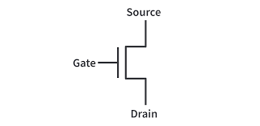
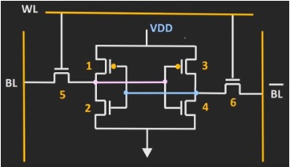
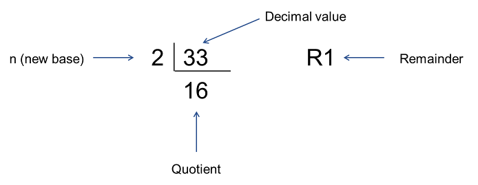
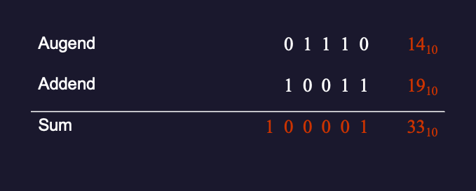
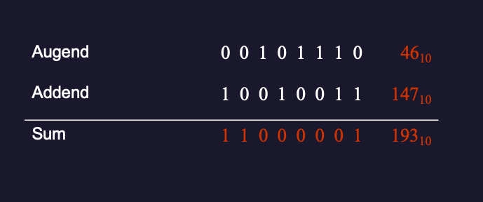
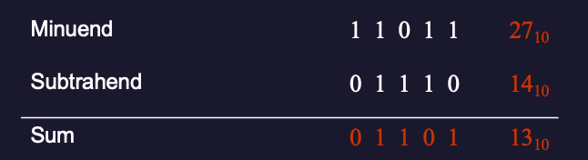
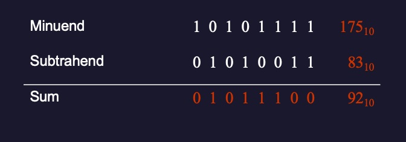
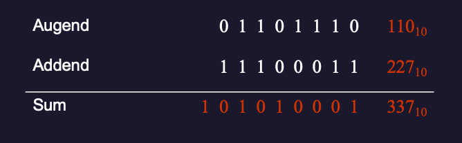
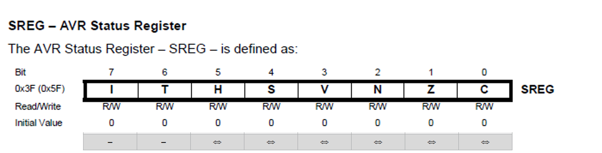
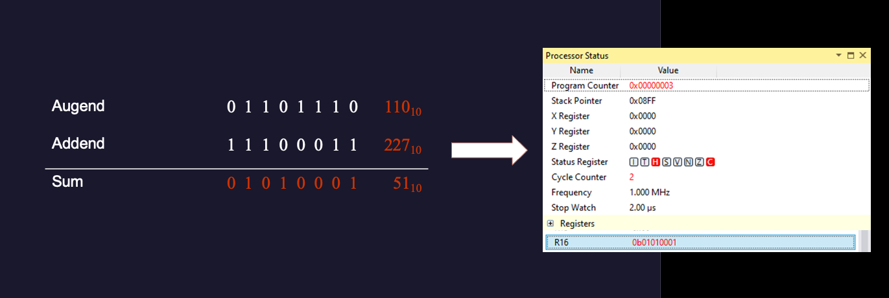

Introduction to Data Representation#
Introduction#
The week’s lecture provides a background to data representation introducing some of the different terminologies used such as ‘bit’, ‘byte’, and ‘word’ before looking at different numbering systems, including binary and hexadecimal, that are used in computing and microcontrollers. The presentation covers a number of methods such as exponentiation and divide-by-n which can be used to convert between number bases and finishes with looking at how microcontrollers perform addition and subtraction.
Topics Covered in this Lecture#
Introduction to Data Representation#
How is Data stored Digitally?#
Modern digital processors and microcontrollers contain millions of solid state devices known as transistors (A single transistor).
{kind=link}

Fig. 13 A single transistor#
With one transistor we can control the flow of electrons creating an object with two states – on or off. This is known as a binary system.
We can use the output (or input if wired to ground) of this transistor to connect to other transistors forming logic gates and eventually a bit of memory.
With many transistors we can use these transistors to create memory and store data as bits (One bit of SRAM memory. (Image source: SRAM vs DRAM : How SRAM Works? How DRAM Works? Why SRAM is faster than RAM?, All About Electronics - YouTube.)).
{kind=link}

Fig. 14 One bit of SRAM memory. (Image source: SRAM vs DRAM : How SRAM Works? How DRAM Works? Why SRAM is faster than RAM?, All About Electronics - YouTube.)#
Terminology#
1 bit = 1 data unit
1 nybble = 4 data units (4 bits)
1 byte = 8 data units (8 bits, 2 nybbles)
1 word = 16 data units (16 bits, 2 bytes, 4 nybbles)
Numbering Systems and Base Conversion#
Decimal Number Representation#
Take the decimal number (Base 10) 4623, what does this representation mean?
We can break down any base 10 (decimal) number \(N\) in the same way using the expression:
where \(X\) is any digit in the set \(\{0, 1, 2, 3, 4, 5, 6, 7, 8, 9\}\).
What About Other Bases?#
We can apply the same techniques to any other base to convert the value into decimal (base 10).
For programming (and digital systems more generally), the binary (base 2), octal (base 8) and hexadecimal (base 16) representations are commonly used.
Binary (base 2)#
where \(X\) is any digit in the set \(\{0, 1\}\).
Example 1#
Consider the binary representation \(N_2 = 10010011\). What is the value of \(N_2\) in decimal base 10?
Solution#
Octal (base 8)#
Octal:
where \(X\) is any digit in the set \(\{0, 1, 2, 3, 4, 5, 6, 7\}\).
Example 2#
Consider the octal representation \(N_8 = 712\). What is the value of \(N_8\) in decimal base 10?
Solution#
Hexadecimal (base 16)#
where \(X\) is any digit in the set \(\{0, 1, 2, 3, 4, 5, 6, 7, 8, 9, \textrm{A}, \textrm{B}, \textrm{C}, \textrm{D}, \textrm{E}, \textrm{F}\}\)[1].
Example 3#
Consider the hexadecimal representation \(N_{16} = 3\textrm{C}4\). What is the value of \(N_{16}\) in decimal base 10?
Solution#
Decimal Number Conversion#
A decimal number can be converted into any other base using the divide-by-\(n\) method where \(n\) represents the desired base.
Step 1 (see Fig. 15) − Divide the decimal number by the value of the new base and get the quotient and a remainder.
{kind=link}

Fig. 15 a step in the divisision-by-\(n\) method of decimal number conversion.#
Step 2 − Keep dividing the quotient of the previous divide by the new base and record the remainder
Step 3 − Repeat Step 2, until the quotient becomes zero
Step 4 – Read the remainders from bottom (MSB) to top (LSB).
Example 4#
Convert \(28_{10}\) into binary (base 2).
Solution#
Step 1: \(28 \div 2 = 14\) remainder \(0\)
Step 2: \(14 \div 2 = 7\) remainder \(0\)
Step 3: \(7 \div 2 = 3\) remainder \(1\)
Step 4: \(3 \div 2 = 1\) remainder \(1\)
Step 5: \(1 \div 2 = 0\) remainder \(1\)
Binary value: \(28_{10} = 11100_{2}\).
Confirmation#
Example 5#
Convert \(28_{10}\) into octal (base 8).
Solution#
Step 1: \(28 \div 8 = 3\) remainder \(4\)
Step 2: \(3 \div 8 = 0\) remainder \(3\)
Octal value: \(28_{10} = 34_{8}\).
Confirmation#
Example 6#
Convert \(28_{10}\) into hexadecimal (base 16).
Solution#
Step 1: \(28 \div 16 = 1\) remainder \(12\,\left(\textrm{C}_{16}\right)\)
Step 2: \(1 \div 16 = 0\) remainder \(1\)
Hexadecimal value: \(28_{10} = 1\textrm{C}_{16}\).
Confirmation#
Tricks and Tips#
All numbers are stored in a computer in binary form. Depending on the encoding, each digit takes up 1 (binary), 3 (octal) or 4 bits (decimal and hexadecimal).
If the digit needs less bits than allowed for its representation, the remaining bits the the left of the number will be set to zero.
For example:
\(1_2\) is represented as
0b00000001[2] (binary, prefix0b, seven padding 0 bits + 1 bit for the value 1).
\(5_8\) is
0005(octal prefix0followed two 0 digits (2 bits plus 3 bits) (00 000 101).
\(10_{10} = 8 + 2\) is
0b00010010.
\(\textrm{E}\) is
0x00E(hexadecimal prefix0x0followed by0b0000, and0b1110=0b00001110).
For octal and hexadecimal values, the equivalent binary number is easily obtained by grouping from the right.
For octal, the largest digit is 7 which needs three bits. So the octal representation of an 8 bit binary number will have 2 bits (0-3) + two groups of 3 bits. The maximum number allowed is
0b11 111 111=0377= 255_{10}.For hexadecimal, four bits are needed to represent all values in the range 0-F. So an 8 bit value can only represent two hexadecimal digits
0x000to0x0FF.
To convert a binary number to octal or heaxdecimal, just group the binary digits and then read off the value.
Example 7#
Convert the binary number 0x000011101 to octal and hexadecimal. Give the value in decimal.
Solution#
Grouping 0x000011101 by threes gives 00 + 011 + 101 = 0035 = \(35_8\).
Grouping 0x000011101 by fours gives 0001 + 1101 = 0x01D = \(1\textrm{D}_{16}\).
Taking the octal value \(62_8 = \left(0\times 8^2\right) + \left(3\times 8^1\right) + (5\times 8^0) = 0 + 24 + 5 = 29_{10}\).
Example 8#
Convert the octal number \(62_8\) (0062) to binary and hexadecimal. Give the value in decimal.
Solution#
The octal digits \(6_8\) and \(2_8\) are the three-bit binary values 0b110 and 0b010 respectively. So the equivalent 8-bit binary byte is obtained by combining these binary values and prepending with two zeros: 0b00 110 010 -> 0b00110010.
Grouping the binary number 0b00110010 in blocks of 4 gives 0b 0011 0010 which gives the hexdecimal digits \(3_{16}\) and \(2_{16}\) respectively. So \(62_8 = 32_{16}\).
The equivalent decimal number is \(\left(3\times 16^1\right) + \left(2\times 16^0\right) = 48 + 2 = 50_{10}\).[3]
Summary of number systems#
Representation of integer values in 8 bit computer systems shows the equivalent binary, octal and hexadecimal values for decimal numbers 0-16. Note that we need just 1 nybble to represent a value in the range 0-154 but we need two nybbles (1 byte) for numbers greater than 15. The maximum value representable in one byte of data is \(2^8 - 1 = 255\). The concept can of course be extended to words (16 bits). The maximum value that can be represented with 16 bits is \(2^{16} - 1 = 65,535\).
Decimal (Code) |
Binary (Code) |
Octal (Code) |
Hexadecimal (Code) |
|---|---|---|---|
\(0\) ( |
\(0\) ( |
\(0\) ( |
\(0\) ( |
\(1\) ( |
\(1\) ( |
\(1\) ( |
\(1\) ( |
\(2\) ( |
\(10\) ( |
\(2\) ( |
\(2\) ( |
\(3\) ( |
\(11\) ( |
\(1\) ( |
\(1\) ( |
\(4\) ( |
\(100\) ( |
\(4\) ( |
\(4\) ( |
\(5\) ( |
\(101\) ( |
\(5\) ( |
\(5\) ( |
\(6\) ( |
\(110\) ( |
\(6\) ( |
\(6\) ( |
\(7\) ( |
\(111\) ( |
\(7\) ( |
\(7\) ( |
\(8\) ( |
\(1000\) ( |
\(10\) ( |
\(8\) ( |
\(9\) ( |
\(1001\) ( |
\(11\) ( |
\(9\) ( |
\(10\) ( |
\(1010\) ( |
\(12\) ( |
\(\textrm{A}\) ( |
\(11\) ( |
\(1011\) ( |
\(13\) ( |
\(\textrm{B}\) ( |
\(12\) ( |
\(1100\) ( |
\(14\) ( |
\(\textrm{C}\) ( |
\(13\) ( |
\(1101\) ( |
\(15\) ( |
\(\textrm{D}\) ( |
\(14\) ( |
\(1110\) ( |
\(16\) ( |
\(\textrm{E}\) ( |
\(15\) ( |
\(1111\) ( |
\(17\) ( |
\(\textrm{F}\) ( |
\(16\) ( |
\(10000\) ( |
\(20\) ( |
\(10\) ( |
Other binary encodings#
Numbers are not the only type of data that can be encoded using binary values. In fact, all data that is manipulated by computers is represented by an encoding of binary numbers.
Some examples of codings that you will see are:
Characters which are represented as ASCII code (7 bits), extended ASCII (8 bits) or UTF (16 or more bits) used to represent other characters (e.g. for accented charcters, other alphabets and languages, math symbols, emojis, and other purposes.
Other numerical encodings, such as Binary Coded Decimal (BCD)
Machine codes, which is how computers represent exercutable programmes, are also represented in binary numbers. These are usually generated by an assembler, compiler, or interpreter from human-readable code that is stored in text files that are themselves use characters encoded in ASCII or UTF.
Additional self-directed learning materials which explore some of these extra encodings are provided on Canvas. We will dicuss some of the encodings used for machine code in later lectures.
Binary Addition and Subtraction#
How do computers add and subtract numbers?
Binary Arithmetic#
Microcontrollers work with 0’s and 1’s (binary)
In order to add or subtract two binary numbers there are a series of rules similar to in decimal arithmetic.
Rules for Binary Addition#
Example 10#
Confirm using binary addition that \(14_{10} + 19_{10} = 33_{10}\).
#
Solution

Example 11#
Confirm using binary addition that \(46_{10} + 147_{10} = 193\).
Solution#

Rules for Binary Subtraction#
Example 12#
Confirm using binary subtraction that \(27_{10} - 14_{10} = 13_{10}\).
Solution#

Example 13#
Show using binary subtraction that \(175_{10} - 83_{10} = 92_{10}\).
Solution#

Binary Arithmetic and Flags#
What happens when the result is larger than 8-bits?
Extended Rules for Binary Addition#
We need to extend the rules of binary addition to introduce an overflow that is indicated by a carry flag.
Example 14#
Show using binary addition that \(110_{10} + 227_{10} = 337_{10}\).
Solution#

The overflow is acknowledged in the status register by the carry flag
Introduction to the Status Register#
The microcontroller has an 8-bit register containing a number of flags which can be set based on the condition of the microcontroller.
The status register for the Atmel ATMega328/P is illustrated in Fig. 16.
{kind=link}

Fig. 16 The Status Register of the Atmel ATMega328/P#
The Half Carry Flag
His set (to 1) if there was a carry from bit 3; it is cleared (set to 0) otherwise.The Zero Flag
Zis set if the result is0x00000000; cleared otherwise.The Carry Flag
Cis set if there was a carry from the most significant bit (MSB)[4] of the result; cleared otherwise.
We will look at the status register in detail in Architecture of the Atmel ATmega 328 Microcontroller.
Binary Arithmetic Example 14#
Fig. 17 shows the condition of the status register after completing the addition from Example 14.
{kind=link}

Fig. 17 The condition of the status register after completing the sum \(110_{10} + 227_{10} = 337\).#
Other Data Representations#
We have provided notes and videos that introduce other commonly used data representations in Appendix A: Other Data Representations. These notes are examinable, but we encourage you to study these for yourself.